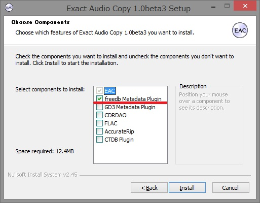
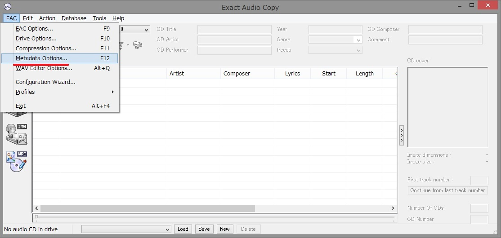
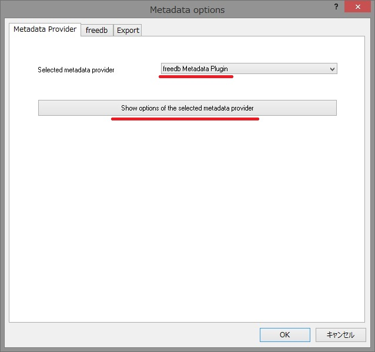
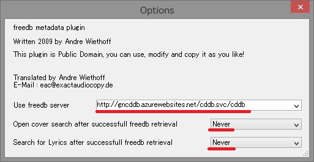
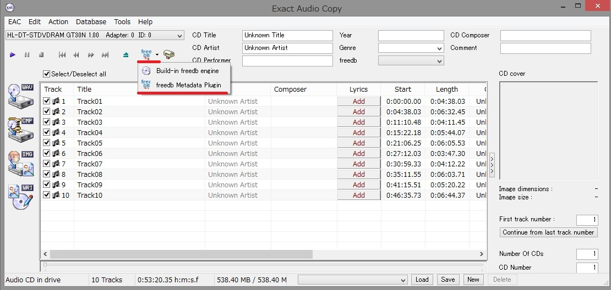

EACからGracenoteへ接続するためのCDDBサーバ 設定方法
1. freedb Metadata Pluginのインストール
EACのインストール時に、以下のオプションを有効化して下さい。
インストール済みの場合は不要です。

2. メタデータプラグインの設定
EACを起動し、上部メニューから[EAC] -> [Metadata Options...]を選択します。

[freedb Metadata Plugin]を選択し、[Show options～]のボタンをクリックします。

[Use freedb server]に http://gncddb.azurewebsites.net/cddb.svc/cddb を入力します。
下二つは任意で構いませんが、不要ならば[Never]を選択します。
[Options]ダイアログを閉じるボタンで閉じ、[Metadata options]ダイアログをOKボタンで閉じます。

3. CD情報の取得
EACトップ画面に戻り、任意の音楽CDを挿入します。
Metadataアイコンの右側の三角を選択し、[freedb Metadata Plugin]を選択します。
アイコン本体を押すと、CD情報が取得されます。

戻る